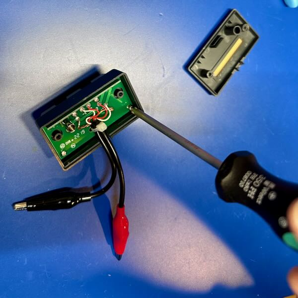
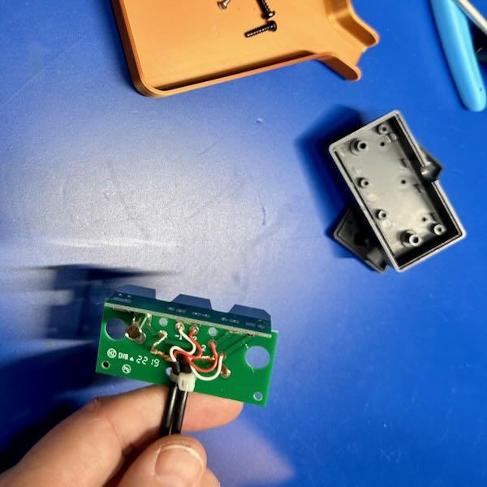
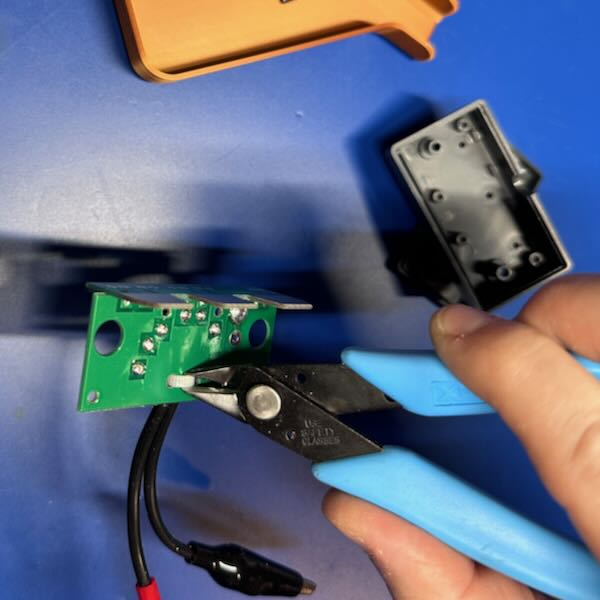
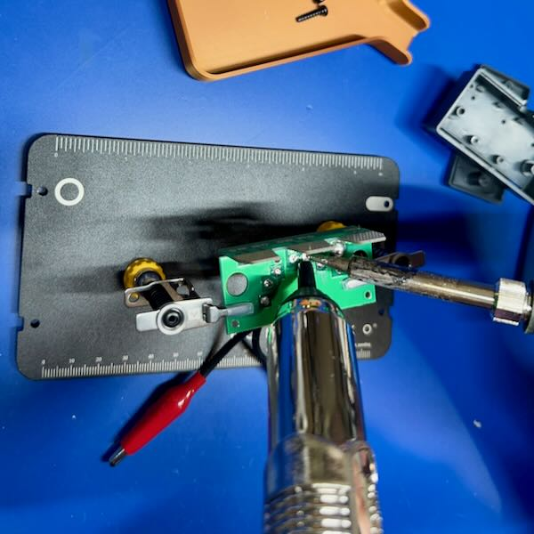
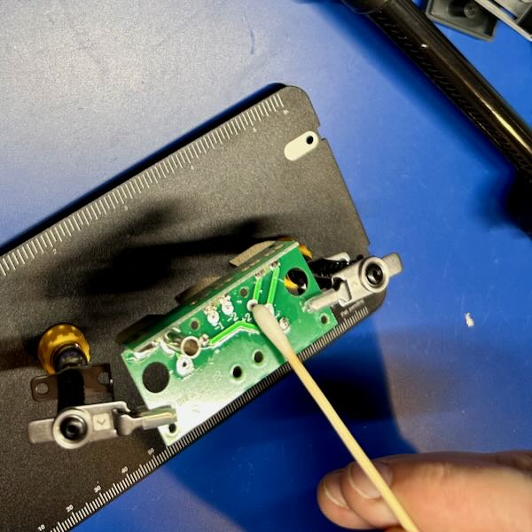

Kelvin Clips for LCR Meter
| Key | Value |
|---|---|
| Problem | Absurdly short leads on LCR meter |
| Skills | Basic tools, soldering |
| Tools | Side cutters, basic tools, soldering iron |
| Cost | $40.00 |
For a while, I've used a Der EE DE-5000 LCR meter. While this is a relatively inexpensive product (typically $150 or so), it's well regarded and punches well above its weight. Comparable meters from other companies might cost 4-5x as much. It even has an optically isolated USB connection available. Anyway, it's a great meter (and I should write it up eventually), but it does come with the most laughably short measurement clips I've ever seen. It also comes with a pair of SMD-focused tweezers.
Anyway, I decided to replace the the absurd alligator clips with some proper Kelvin clips. I bought some, with BNCs, online for a reasonable price, and then proceeded to attach them to an existing TL-21 alligator clip lead case. I bought a spare for this project, just in case.
What Are Kelvin Clips?

Named after Lord Kelvin, Kelvin clips are a way to perform a four-wire measurement. In a four-wire measurement you have a pair of force wires (wires 1 and 4) and a pair of sense wires (wires 2 and 3). The force wires push some current across the DUT, while the pair of sense wires actually sense the voltage changes. Sometimes also called remote sensing, it's a way to perform a very accurate measurement while taking many variables of the leads themselves out of the calculation. Many higher-end bench-top multimeters, LCR meters, and similar use four-wire measurements for accuracy.
I will note that the provided absurd alligator clips did in fact have 4-wire connections. They were just silly. The ones I bought came with BNC connections, so we'll have to remove those for this implementation, but they look like this:
{kind=link}
The Replacement
Not Everything Was Photographed
In spite of my best attempts, I got distracted at various points and didn't actually photograph everything. I'll try to walk through the steps anyway.
{kind=link}
Step 1. Open the box. There are some self-tapping Phillips head screws on the back which need to be removed. You can see the absurd alligator clips here. At the top, there are three tabs which insert into the meter's slots and provide the four wire measurement as well as a "guard" connection. We won't be touching the gard connection in this project.
Guard What?
It always puzzled me, until I talked to a friend who used to work for HP Test & Measurement (note, this is the real HP, and not whatever monstrosity now uses the name). The guard connection is used to help minimize noise and reduce the parasitic effects coming from the component being measured. This can get you much higher precision. I never use it.
{kind=link}
Step 2. One you have the box open, you can see the internal parts. There's a small PCB with with the connections from the alligator clips. There are 6 connections: connections 1, 2, and ground for each positive (+) and negative (-). The grounds are not labeled, but the others are labeled "-1", etc. As far as I am aware of, there's really no difference in most clip designs between 1 and 2, as they join together at the tip and are designed to be as close to identical in length as possible. This reduces any differences in the measurement due to length difference in the clips themselves. Keep note of this idea, as it's important.

Step 3. Now we need to remove all the screws holding the PCB into the plastic case. Like the exterior screws, these are all self-tapping ones. There are 4 of them, since I missed 1 the first time. For some reason, these are non-ferrous, and so magnetic screwdrivers won't help. Make sure you keep them safe because they are tiny. I use these neat little 3d printed trays from @Area51. Print lots of them!

Step 4. Once you have the PCB out of its case, set the case to the side. You should take a close look at the PCB, just to make sure you understand exactly how it's wired up together. I recommend taking a picture with your phone so you can see all the connections. We will be replicating these later.

Step 5. Now, we need to remove the little zip tie that's been attached through 2 small holes in the PCB. You can use some form of snips, as I did in this case with a pair of flush cutters (my personal go-to for most any job). This little zip tie forms a strain relief to reduce strain on the solder joints. We will be replicating this later.

Step 6. Next, we put the PCB in some kind of holder. Here, I'm using my favorite, an Omnifixo. This will hold the PCB securely while we're working. While you can try and use your hands, I try to keep my fingers as far away from the hot tip of a soldering iron as I can. You should too. As you can see from the photo, the solder is actually on the bottom of the PCB, so we'll need to flip it over.

Step 7. Once you flip the PCB over, you can go to removing the solder. Here, I'm using a solder sucker to remove the solder itself. You may need to clean up a little bit with solder wick when you're done. I find that pulling gently on the wires as you're heating them helps pull them out more easily. I'm not sure what solder was used on this PCB originally, but it required quite alot of heat, and I had to crank my soldering iron to 400C to get things to come out.
{kind=link}
Step 8. Now we have the wires and ground pulled off, we should inspect the PCB to make sure there's nothing wrong. What I'm typically looking for is damage to the pads or traces. I was especially worried about it this time because of the amount of heat that was required to get the solder to melt and come off. Fortunately, there didn't appear to be any major damage to anything.

Step 9. After examining things, we want to clean the PCB. I use IPA for this job, and give it a good scrub with a cotton swab. I want to make sure I get any residue off the board so that we can get a good solder joint when we put the new leads on. However much IPA you used, use more. It's inexpensive, and it cleans really well, and you can never have too clean a surface on a PCB.
Missing Pictures
This is where I messed up and didn't take a lot of pictures, so I'm going to try and just walk you through the steps.
Step 10. Now it's time to bring in the new clips! The first step is to [not shown] clip the cables off. You want to do this as accurately and evenly as possible. I pulled them tight, and then held them while I cut all 4 (a pair per clip) at the same time. We want to make sure we pay attention to consistency with the clips. It's not as important how long they are, but that they're all the same length.
{kind=link}
Step 11. Now that you have your cables cut-to-length, we need to figure out how much needs to be stripped. We want to strip the outer insulation back to a just ahead of the strain relief zip tie mentioned earlier. I found that holding them against the PCB and marking them with a pen (in this case a white pen) was the most useful.
{kind=link}
{kind=link}
Step 12. Now you need to strip the cables. I use my somewhat fancy Irwin automatic cable stripper, which magically just do the right thing. You'll want to strip the outer insulation back to the marking. Then, take the very fine wire that makes up the outer shielding and pull it all to one side and twist it together as shown to the right. Be careful doing this that you get all of the wires. They tend to be very fine, and if you accidentally miss one you could end up shorting the shield to the conductor, which would result in very poor measurements, or worse.
Step 13. Now you need to strip the inner insulation back to expose the conductor. Here you only want to strip off 3-5mm of insulation. We want to ensure the wire is insulated as close to the final solder joint as possible. This will reduce the risk of any shorts and protect the wire over time.
{kind=link}
Step 14. Now comes tinning of the wires. We tin the wires to hold all the strands together and prepare them for soldering to the contact pad later. By doing this, we make the later soldering much more reliable and easier. Skipping this step just makes more work later.
Just heat the wire up and run the solder along it. The first time will feel weird, but after that you'll be able to do it quite quickly.
{kind=link}
Step 15. Now is the time on Sprockets were we solder. I start on the inside wires (-2 and +2), and work my way out. Put a little bit of solder on the pad itself first, then press the wire against the pad, heat it, and the combination of the solder on the pad and the tinned wire should quickly solder together. If they don't, you might need a little bit more solder on the pad to start.
This is where the Omnifixo (or any other "helping hands") comes into its own. It helps you hold the wire in the right place as you're soldering to ensure that you get a good contact, without risking putting your tender flesh close to the solder tip.

Step 16. Final examination. Look at all the solder joints. They should look reasonably shiny. If they are really rough looking, you should add some flux (a flux pen is great from this) and reheat them to let them set correctly. We don't want a cold solder joint. Now is also the time where you can pull out the IPA again and give the board a good wipe down and cleaning. We especially don't want any residual flux on something where we are hoping to make precise measurements. Flux has some conductance (and resistance) and will interfere potentially. Note, this picture was before cleaning the flux off the PCB.
Step 17. Finally, we re-assemble it. I haven't shown these because, quite honestly, it's just a reverse of opening it. First, though, insert a plastic zip tie through the two small holes where the original one was. Don't tighten it just yet, just make sure it's sticking out around the cables. Then, insert the PCB back into the plastic box, making sure to get the Add the 4 tiny PCB screws. Once those are tightened, complete the zip tie, tightening it snugly and trimming the excess. Finally, reattach the top to the case.
{kind=link}
Step 18. Stick a label on that sucker.
Seriously though, I tend to label anything like this so that I know what and when this was done. Especially since the box itself has a part number that wouldn't map correctly.
That brings us to a point where we need to figure out if this thing even works. To do that, we're going to stick it in the meter and give it a try.
{kind=link}
Step 19. Calibrate the clips. For my meter, this means pressing the CAL button for 2 seconds, then going through a calibration with the clips open (not connected) and then with the clips shorted (connected). Doing this calibrates out the wire itself so that the meter can measure just the DUT. Each of those steps takes 30 seconds, then you can use the meter.
While you don't have to do this every single time you use the meter, it's not a bad habit to get into to do it frequently. Environmental influences, like temperature, can impact the readings.
LCR Meter Use
Speed Run
This is just the most absolutely simplified use of an LCR meter, and I'll be writing up a more detailed dive on what and how to use LCR meters in the future. This is just a taste, and fits with some of the fundamentals.
{kind=link}
So, skipping over a lot of things, one of the things an LCR meter can tell you that a regular multimeter cannot are the characteristics of a capacitor beyond its basic capacitance for a DC load. An LCR meter looks at it as a sine wave (typically), which means the measurement has a frequency.
First, let's take a look at this little aluminum electrolytic capacitor at 1kHz. Here we see the capacitor shows a capacitance of 365µF. Above that, however, you can see a second display showing Θ showing that the current leads the voltage by 80.3°. This is part of the behavior of impedance.
{kind=link}
If we now take a look at the capacitor with a 100Hz signal instead, we find that it has totally different values. Here, we have 385.9µF (about 5% more) and the current leads by 87.4° (about 9% more).
This is, unfortunately, one of the areas where electronics gets complicated. Fortunately, for a lot of hobbyist type work, you can get away without the extra complexity, but I find it useful to at least understand what's there, and then you can choose to ignore it.
SMD Leads

Just as an aside, I thought I'd show you what the SMD leads/tweezers look like, and how the Kelvin arrangement is achieved. Looking at the inside of the probe, you can see dual wires, leading to dual traces that go all the way down to the metal tip where they meet. Since the metal tip has well-known characteristics, it can be compensated out of the calculations.
These tweezers are designed to grab tiny little surface-mount inductors (L), capacitors (C), and resistors (R). That's where the name of the meter comes from.
Neat, huh?
Comments or Questions?
If you have any comments, questions, or topics you'd like to see covered, please feel free to either reach out to me on Mastodon (link below) or open an issue on Github.